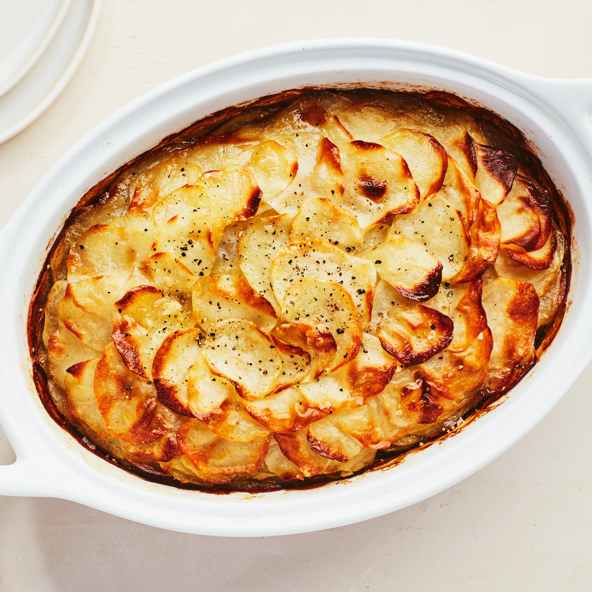

All recipes
Potato Casserole

Description
A Potato Casserole is a hearty and comforting dish made
with layers of thinly sliced or diced potatoes, often combined with other
ingredients such as cheese, cream, butter, and various seasonings. The dish
is typically baked until the potatoes are tender, and the top is golden and
crispy.
Ingredients
- 4 large potatoes, peeled and thinly sliced
-
2 cups shredded cheddar cheese (or a mix of your favorite cheeses)
- 1 cup heavy cream or whole milk
- 1/4 cup unsalted butter, melted
- 1 teaspoon salt (adjust to taste)
- 1/2 teaspoon black pepper
- 1 teaspoon garlic powder
- Optional: 1 teaspoon dried thyme or rosemary for added flavor
-
Optional toppings: Additional shredded cheese, breadcrumbs, chopped
fresh herbs (parsley, chives), or crispy bacon bits
Steps
- Preparation
- Preheat the oven to 375°F (190°C).
-
Peel and thinly slice the potatoes. You can use a mandolin for even
slices.
- Layering
- In a greased baking dish, layer half of the sliced potatoes.
- Sprinkle half of the shredded cheese over the potatoes.
-
Season the layer with half of the salt, pepper, and garlic powder.
-
Repeat the layers with the remaining potatoes, cheese, and seasonings.
- Sauce
-
In a mixing bowl, whisk together the heavy cream (or milk) and melted
butter.
- Pour the cream mixture evenly over the layered potatoes.
- Baking
-
Cover the baking dish with foil and bake in the preheated oven for
about 45 minutes.
-
Remove the foil and continue baking for an additional 15-20 minutes or
until the top is golden brown, and the potatoes are tender.
- Optional Toppings
-
If desired, sprinkle additional cheese, breadcrumbs, or your chosen
toppings over the casserole during the last 10 minutes of baking.
- Serve
-
Allow the Potato Casserole to rest for a few minutes before serving.
- Garnish with fresh herbs or additional toppings if desired.